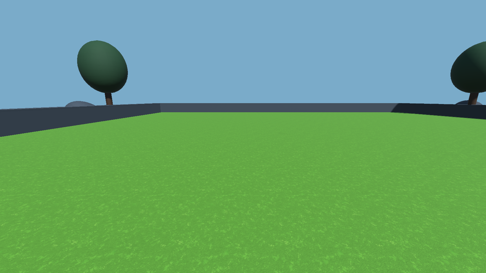
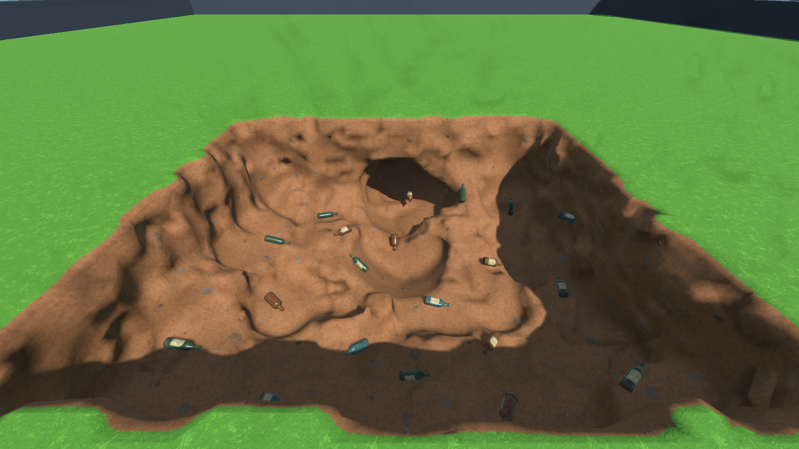
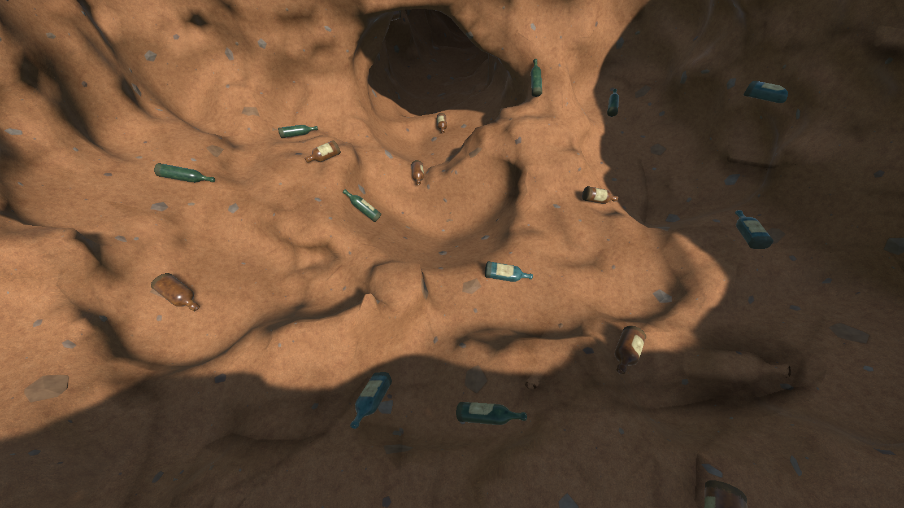
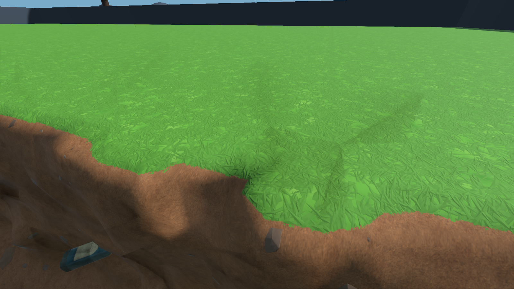
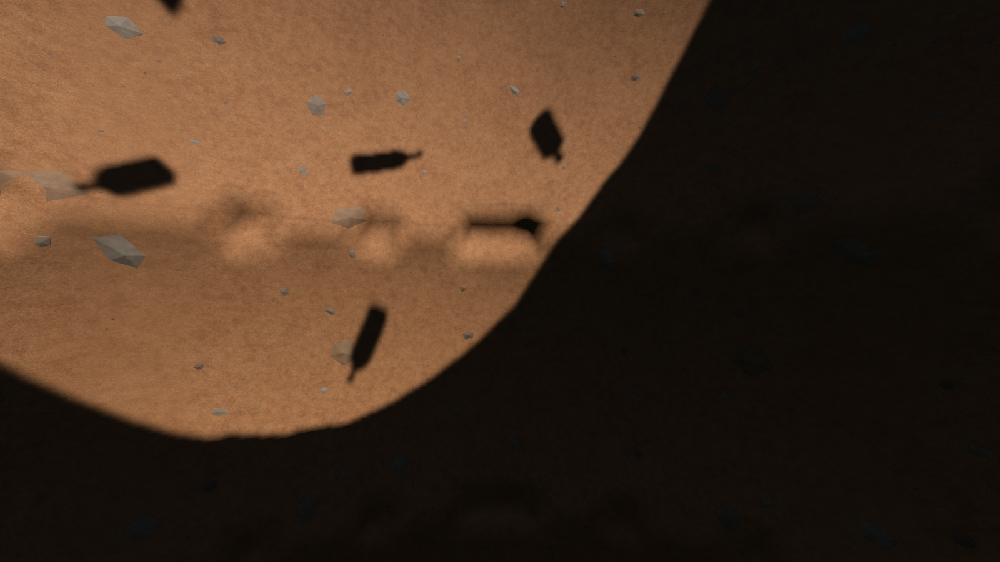
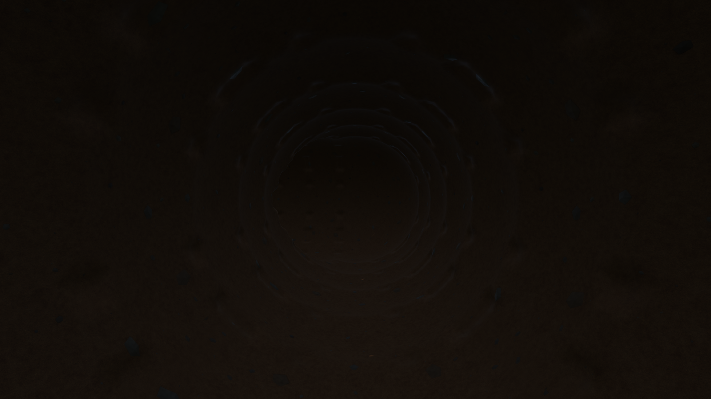

Task 105 complete · Sunny r8 accepted · 12 September 2026
Accepted ground and natural daylight
The user accepted this result as “perfect”. Preserve the lively leaf-green/warm-earth palette, thin turf fringe, sparse solid mineral faces and gradual daylight falloff. These six representative views are the retained visual baseline.
Superseded comparisons and temporary image copies were removed at the user's request. Upright moving grass remains future task 08 work with specific batch approval pending.

Untouched lawn

Excavated pit and turf fringe

Soil, solid minerals and existing finds

Close turf edge

Daylight at 4 metres

Lateral passage at 7 metresUnity CLI captures from the accepted r8 build. The last two views use a separate temporary depth fixture. Click a picture to view it full size. Native hardware qualification remains task 54.
Play the accepted Windows build · Shared style guide · Source retention · Completion record
Direction references: Berry Bury Berry and A Game About Digging a Hole. Their artwork is not included in the game.